Identidad Hondureña
La identidad nacional hondureña está profundamente vinculada al pensamiento de Francisco Morazán,
héroe nacional y figura clave de la Federación Centroamericana. Morazán defendió la unión de los pueblos
centroamericanos bajo ideales de libertad, justicia, educación y desarrollo, convencido de que una
Centroamérica unida tendría mayor fortaleza política, económica y social. Su visión integracionista continúa
siendo símbolo de patriotismo y orgullo para Honduras.
Junto a Morazán, los próceres patrios promovieron valores de soberanía, independencia y ciudadanía, sentando
las bases históricas de la nación hondureña y fortaleciendo el sentimiento de pertenencia a una patria rica en
historia y cultura.
| Francisco Morazán | Jose Cecilo del Valle | Dionisio de Herrera |
|---|---|---|
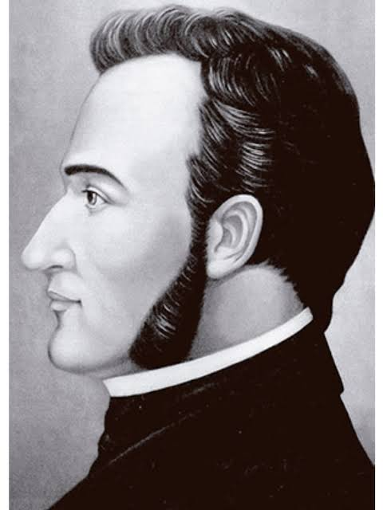 |
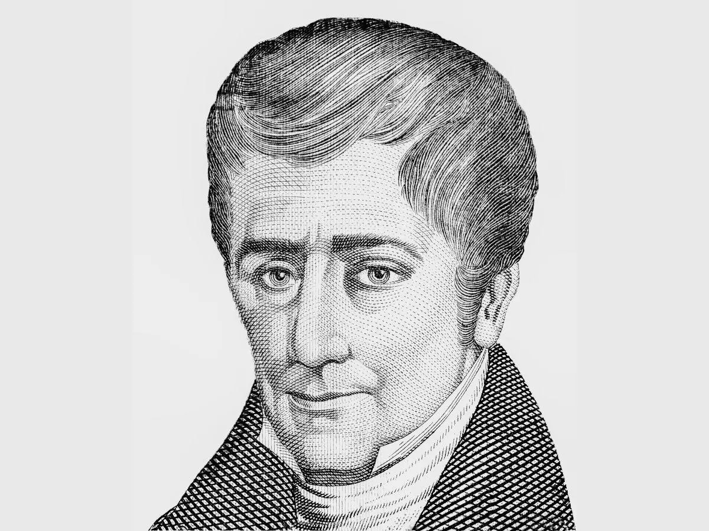 |
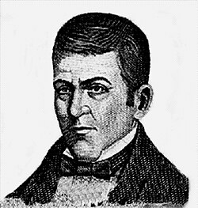 |
| LÍder de la gesta unionista centroamericana. Su pensamiento político buscó la consolidación de una sola República Federal fuerte, instruida y secular. Defendió la educación pública, la libertad de culto y la modernización del Estado | Pensador, humanista y redactor del Acta de Independencia de 1821. Su visión promovió el valor del conocimiento científico, la buena administración pública y la fraternidad continental. | Primer Jefe de Estado de Honduras, autor de la primera Constitución del país (1825). Destacó por sentar las bases institucionales, promover la instrucción civil y defender las libertades públicas. |
Etnias Vivas de Honduras
Las etnias hondureñas enriquecen la nación con su diversidad lingüística, artística, gastronómica y espiritual. Sus conocimientos ancestrales, tradiciones y formas de vida han contribuido a construir una Honduras multicultural, donde la riqueza cultural es tan valiosa como sus recursos naturales.
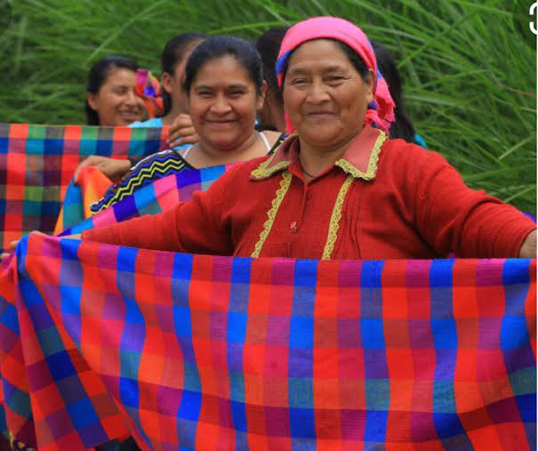
LENCAS
Los Lencas constituyen el pueblo indígena más numeroso de Honduras y habitan principalmente en los departamentos de Lempira, Intibucá, La Paz y Ocotepeque. Son descendientes de antiguas civilizaciones mesoamericanas que poblaron el territorio antes de la llegada de los españoles.
Características culturales
Aporte a Honduras
Los Lencas representan un símbolo de resistencia indígena y preservación cultural. Su legado está ligado a la figura del cacique Lempira, héroe nacional que luchó contra la conquista española.
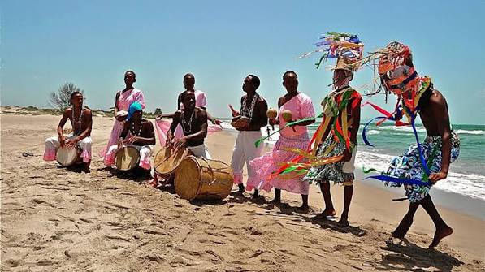
GARÍFUNAS
Los Garífunas son un pueblo afrodescendiente originado por la mezcla de africanos e indígenas caribes y arahuacos. Llegaron a Honduras en 1797 y actualmente se encuentran principalmente en la costa norte y las Islas de la Bahía.
Características culturales
Aporte a Honduras
La cultura garífuna ha sido declarada Patrimonio Cultural Inmaterial de la Humanidad por la UNESCO y constituye uno de los mayores atractivos culturales del Caribe hondureño.
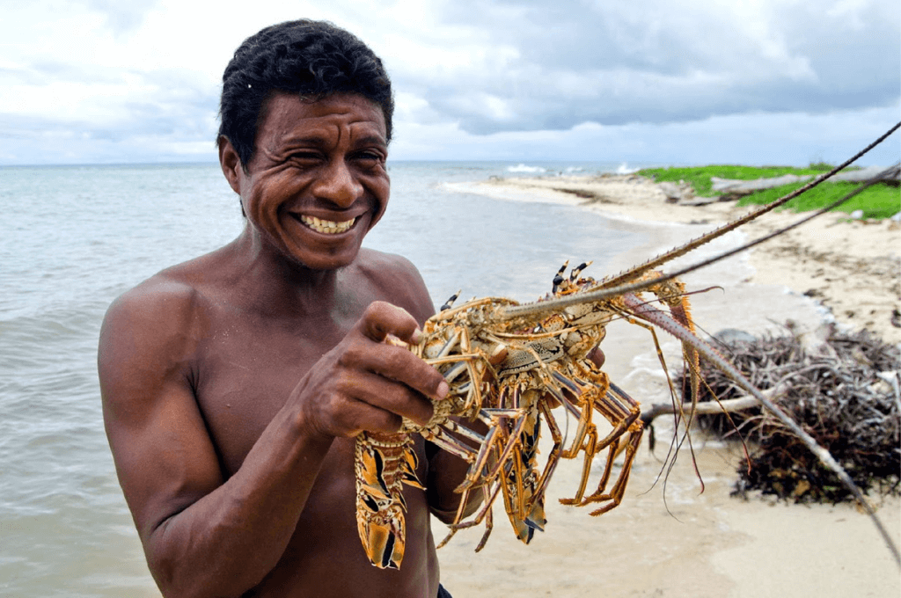
MISQUITOS
Los Misquitos habitan principalmente en el departamento de Gracias a Dios, en la región conocida como La Mosquitia, una de las áreas naturales más extensas y mejor conservadas de Centroamérica.
Características culturales
Aporte a Honduras
Los Misquitos son guardianes de importantes ecosistemas como la Reserva de la Biosfera del Río Plátano, contribuyendo a la protección de la biodiversidad nacional.
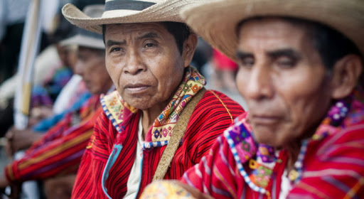
TOLUPANES
Los Tolupanes (también llamados Xicaques) viven principalmente en el departamento de Yoro y algunas zonas de Francisco Morazán.
Características culturales
Aporte a Honduras
Los Tolupanes han contribuido a la preservación de importantes áreas forestales y representan una parte fundamental de la diversidad cultural del país.
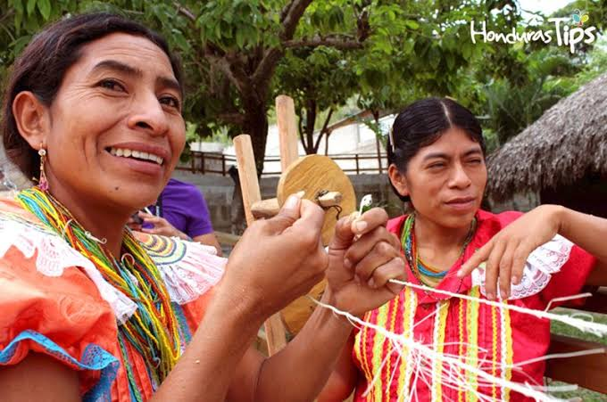
CHORTÍS
Los Chortís son descendientes directos de la civilización maya y se concentran principalmente en los departamentos de Copán y Ocotepeque.
Características culturales
Aporte a Honduras
Los Chortís preservan una herencia cultural invaluable vinculada al esplendor de la civilización maya, especialmente en la región de Copán, uno de los sitios arqueológicos más importantes de América.
Gastronomía típica hondureña
La gastronomía hondureña es un reflejo de la diversidad cultural del país. Influenciada por las tradiciones indígenas, africanas y europeas, ofrece una amplia variedad de platos y bebidas que conservan sabores auténticos transmitidos de generación en generación. Desde las emblemáticas baleadas y nacatamales hasta bebidas tradicionales como el chorote y el guifiti, cada preparación forma parte del patrimonio cultural que identifica a Honduras ante el mundo
| Baleadas | Sopa de Caracol | Pescado Frito con Tajadas |
|---|---|---|
 |
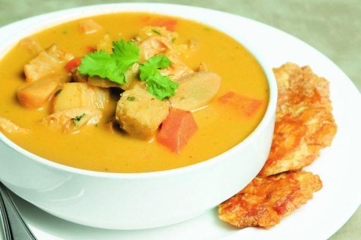 |
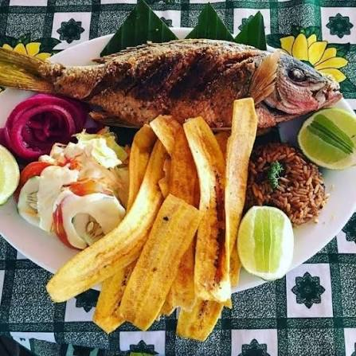 |
| El platillo que más representa a los hondureños. Tortilla de harina rellena de frijoles refritos y mantequilla. | Tradicional de la costa norte. Se prepara con caracol, leche de coco, yuca, plátano y especias caribeñas. | Especialidad costera servida con tajadas de plátano verde, ensalada de repollo y encurtidos. |
| Montucas | Pollo con Chuco | Sopa de Mondongo |
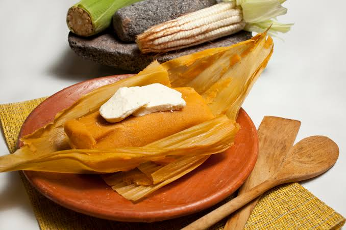 |
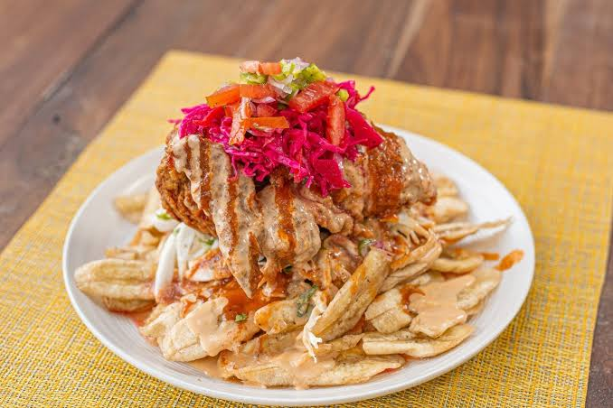 |
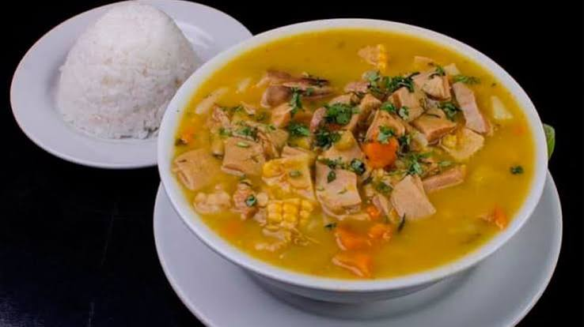 |
| Tamales de maíz tierno rellenos de pollo o cerdo, envueltos en hojas de tusa. | Uno de los platillos más populares del país. Consiste en pollo frito acompañado de tajadas de plátano, repollo, salsa de tomate y aderezo. | Caldo tradicional hecho con mondongo de res, verduras, yuca y plátano. |
Las bebidas tradicionales hondureñas reflejan la riqueza agrícola y cultural del país. Elaboradas con productos naturales como el maíz, el cacao, el arroz, el café y diversas frutas tropicales, estas bebidas han acompañado durante generaciones las celebraciones, reuniones familiares y actividades cotidianas. Desde refrescantes preparaciones caribeñas hasta bebidas ancestrales de origen indígena, cada una forma parte del patrimonio gastronómico que distingue a Honduras y fortalece su identidad cultural.
| Atol de Elote | Chorote | Horchata Hondureña |
|---|---|---|
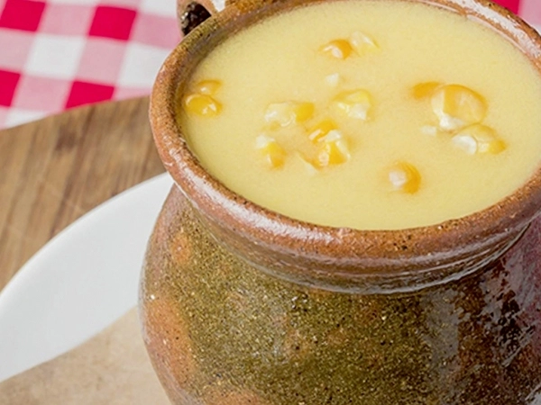 |
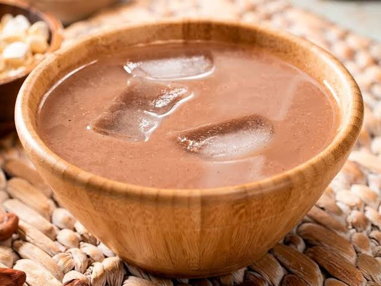 |
|
| Bebida caliente elaborada con maíz tierno, leche, canela y azúcar. | Bebida ancestral preparada con cacao y maíz, herencia de los pueblos indígenas. | Refresco elaborado con arroz molido, canela, vainilla y azúcar. |
| Café | Guifiti | Vino de Coyol |
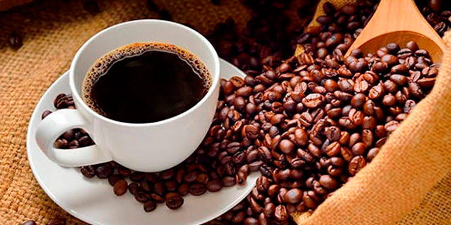 |
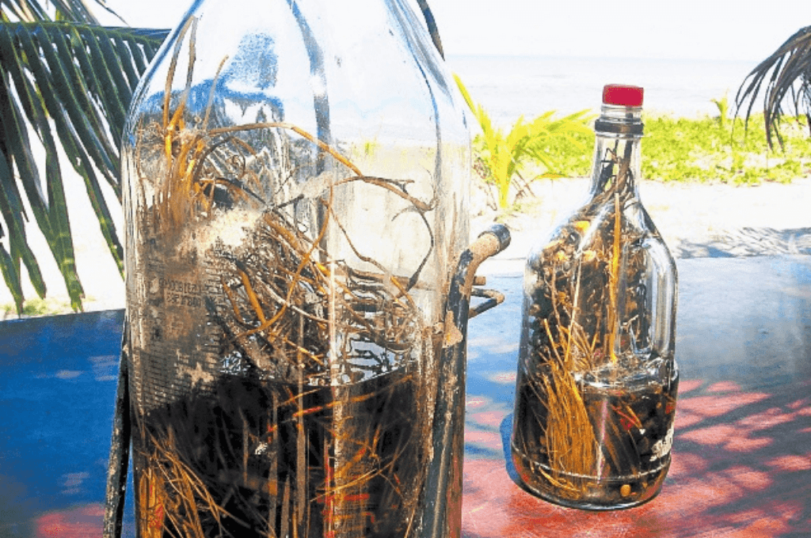 |
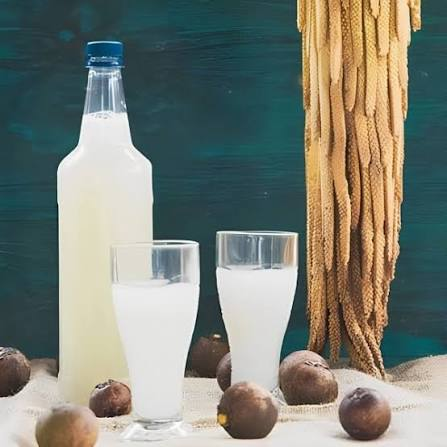 |
| Reconocido internacionalmente por su calidad, aroma y sabor. | Bebida tradicional garífuna preparada con hierbas, raíces y especias maceradas. | Bebida artesanal obtenida de la fermentación natural de la savia de la palma de coyol, consumida especialmente en zonas rurales. |